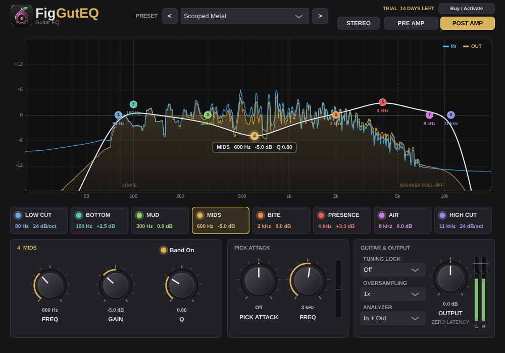
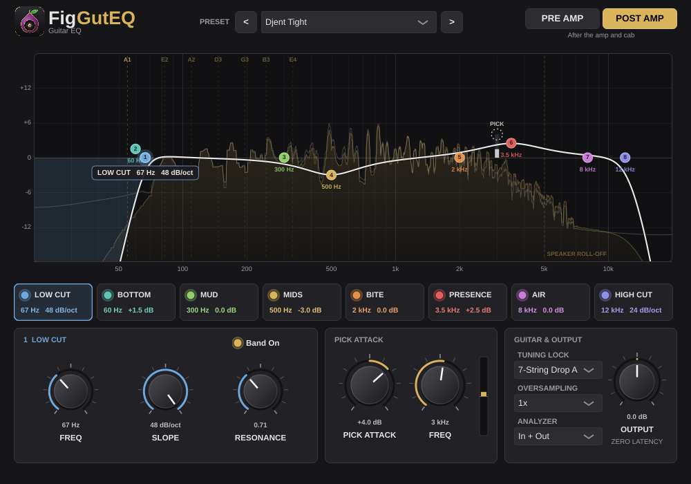
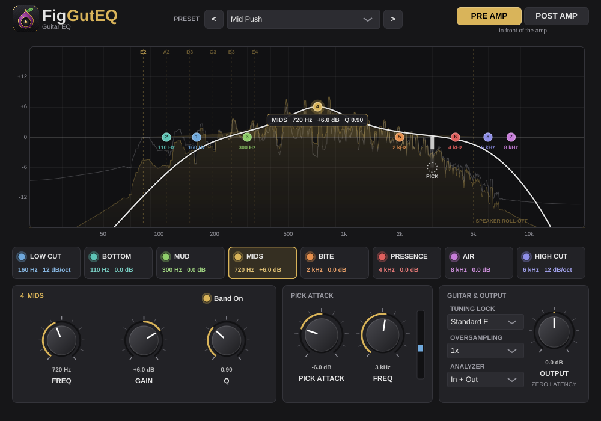

The guitar-only EQ.
Zero latency.
FigGutEQ is an 8-band EQ made only for guitar. Every band sits where a guitar actually lives, with a frequency and note readout so you always know what you're shaping. It does two things no general-purpose EQ can, and it's built to sit next to FigAMP.
Mac (Apple Silicon and Intel) and Windows · AU, VST3 and standalone app

Eight bands, each where a guitar lives
No hunting for frequencies. Each band is named for the part of a guitar sound it shapes, and shows its frequency as a note name, so "take out some mud" is one knob.
Low Cut
Clears everything below your lowest string. 24 dB per octave, and it follows your tuning.
Bottom
Weight and thump. The low strings and palm mutes.
Mud
The boxy, woolly range that piles up when guitars stack.
Mids
Body and honk. Scoop it for metal, push it for blues.
Bite
Pick attack and edge. Where a riff gets aggressive.
Presence
Cut-through in a mix without turning up.
Air
Sparkle and sheen for cleans and acoustics.
High Cut
Fizz gone. 24 dB per octave, with the speaker roll-off marked on the graph.
Two things no other EQ does
- Pick Attack. Boosts or cuts only at the instant your pick hits the string. Tame pick click, or add snap, without changing the note that rings after it.
- Tuning Lock. Tell it your tuning, from Standard E and Drop D down to 7-string Drop A and 8-string F#. It marks your open strings on the graph and moves the low cut, the Bottom band and the presets down with your lowest string.
- And note names on every band, so you shape by the note you hear, not a number you have to look up.


Built for the session
- 18 guitar presets, each voiced twice. PRE AMP for in front of your amp, POST AMP for the mix. One switch flips the whole set.
- Real-time In / Out analyzer in two colours, so you see what the EQ is doing to your guitar, not just the curve.
- Zero latency. Nothing added at 1x. The optional 2x and 4x oversampling adds under a tenth of a millisecond.
- STEREO / MONO switch and L / R meters. A guitar recorded on one side reaches both speakers.
- The FigAMP look, so the two sit side by side in your session.
- Works in your DAW: LUNA, Logic Pro, Ableton Live, Reaper, Cubase, Studio One, FL Studio and more.
18 presets, before and after the amp
Every preset comes as a PRE AMP version that shapes your guitar on the way into the amp, and a POST AMP version that sits it in the mix. Pick one, then move a band if you like.
Tight Low End · Mud Cut · Fizz Tamer · Bass & Boom Control
The fixes you reach for on every guitar track.
Scooped Metal · Djent Tight · Classic Rock Crunch · Doom & Stoner
From a mid scoop to low-tuned chug and wall-of-fuzz weight.
Mid Push · Presence Lift · Lead Cut-Through · Rhythm Glue
Leads that sit on top, rhythm parts that lock in.
Clean Sparkle · Blues Warmth · Funk Clean · Country Twang
Chime, warmth, snap and spank for clean tones.
Vintage Radio · Acoustic Strum
A lo-fi band-pass effect, and a tidy acoustic for strummed parts.
Made for FigAMP
- Before the amp: put FigGutEQ in PRE AMP mode in front of FigAMP to tighten the low end and shape the pick attack the amp hears.
- After the amp: switch to POST AMP behind FigAMP to tame fizz and sit the guitar in the mix.
- Same look, same licence flow, same free 14-day trial. Your FigAMP account activates it too.
Honest fine print
FigGutEQ is an EQ for guitar, not a general mastering EQ: eight fixed-purpose bands, no mid/side mode and no linear-phase mode, because those add latency and FigGutEQ adds none. If you want a surgical 20-band EQ for a full mix, you have one already. If you want guitar fixed in two clicks, try FigGutEQ free for 14 days.
Get FigGutEQ
One-time purchase. Yours to keep.
Mac
macOS 11 or later, Apple Silicon or Intel. Audio Unit, VST3 and standalone app, from a signed and notarized installer.
Windows
Windows 10 or 11, 64-bit. VST3 and standalone app.
Licence
Activate on your own computers with your Fig Pro Audio account, the same one FigAMP uses. The trial is fully featured for 14 days.